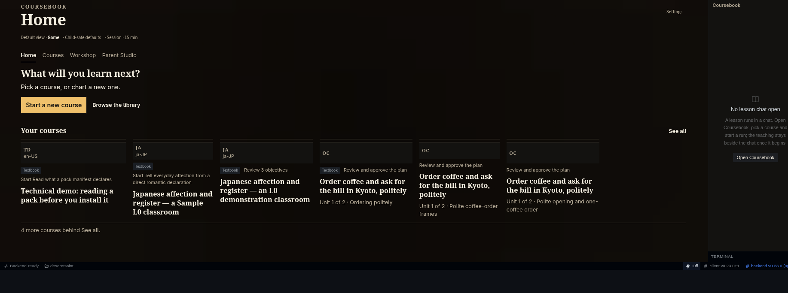
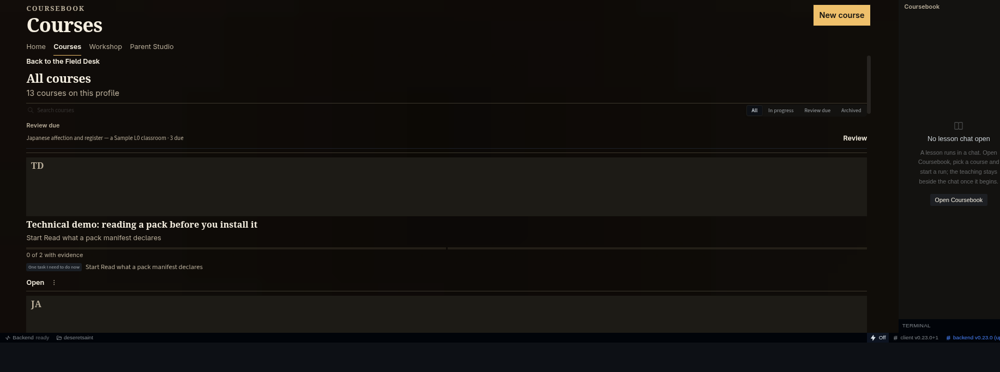
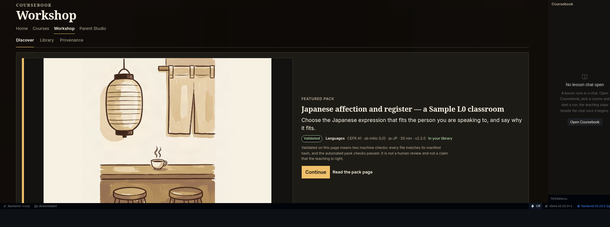
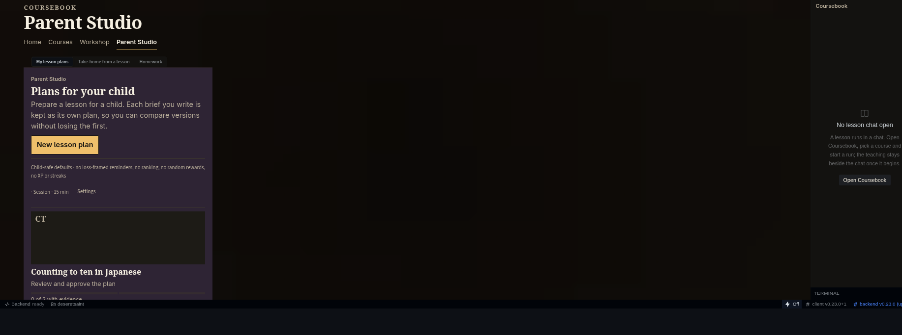

5 failure(s)

fonts: CB Display loaded · CB UI loaded
axe: none
titles: Your field library | Your courses | Japanese at home | Rehearsal (no lesson written)
diff: 100.00%

fonts: CB Display loaded · CB UI loaded
axe: color-contrast
titles: All courses | Japanese at home | Rehearsal (no lesson written)
diff: 100.00%

fonts: CB Display loaded · CB UI loaded
axe: none
titles: Japanese affection and register — a Sample L0 classroom | Find a pack | Languages | Japanese affection and register — a Sample L0 classroom | For parents | Parent demo: measuring ingredients together | Technical | Technical demo: reading a pack before you install it
diff: 100.00%

fonts: CB Display loaded · CB UI loaded
axe: none
titles:
diff: 100.00%
home: frame size changed courses: axe color-contrast courses: frame size changed workshop: frame size changed studio: frame size changed